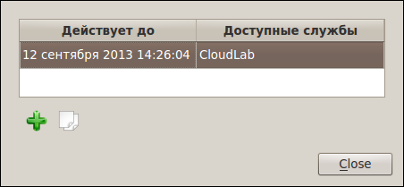
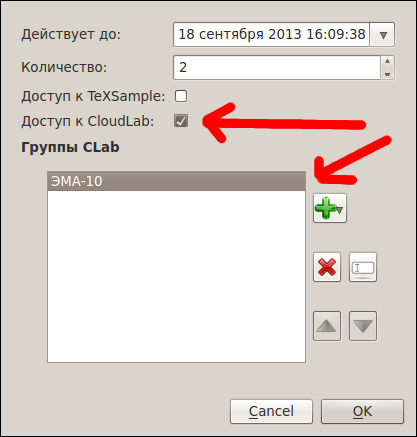
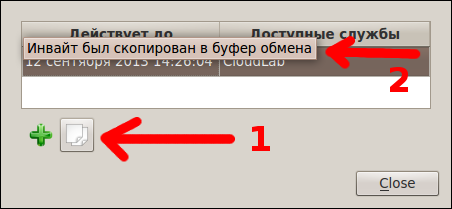

[Назад: 2.3. Управление пользователями]
[Далее: 2.5. Управление группами]
Управление инвайтами
Чтобы зарегистрироваться в системе CloudLab, необходимо иметь специальный
инвайт-код. Будучи администратором или модератором, можно
генерировать (создавать) инвайты и выдавать их будущим пользователям. Для управления инвайтами выберите в меню
"CloudLab" пункт "Инструменты", в нем - пункт "Администрирование" и, наконец, в последнем
меню - пункт "Управление инвайтами...". Появится окно следующего вида:

Для добавления инвайта нажмите на кнопку с изображением зеленого крестика, в появившемся диалоге (см. рисунок ниже)
укажите дату, до которой будут действительны созданные инвайты, их количество, а также то, к каким сервисам будет иметь
доступ пользователь, зарегистрировавшийся с их использованием (нужно поставить галочку напротив пункта
"CloudLab"), и в каких группах будет состоять.

После создания инвайтов они появятся в списке. Выделите инвайт, а затем нажмите кнопку с изображением двух листов
бумаги, чтобы копировать его в буфер обмена, а затем втсавить в нужное место (например, в электронное письмо) при
помощи сочетания клавиш "Ctrl+V". Появится соотвтетствующее сообщение:

Передайте инвайт-коды пользователям (например, студентам или сотрудникам кафедры), чтобы они могли зарегистрироваться в
системе.
Важно: не предоставляйте студентам уровень доступа выше уровня обычного пользователя, если только не уверены в
последствиях.
[Назад: 2.3. Управление пользователями]
[Далее: 2.5. Управление группами]